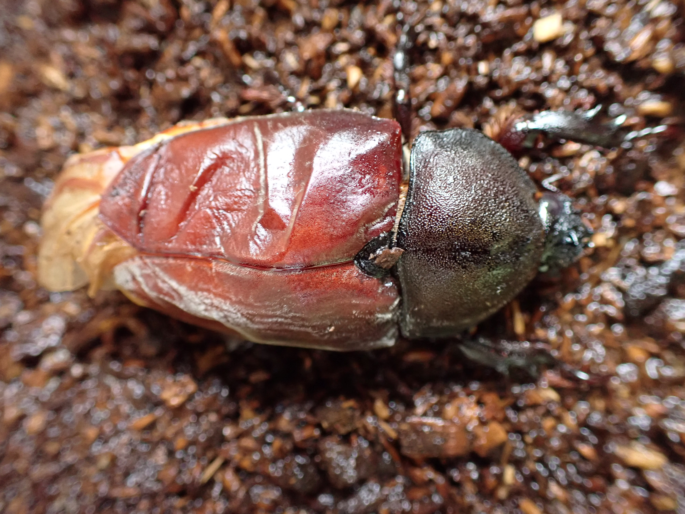

2020年のカブトムシの観察
Written on
2020年07月06日
１匹めの羽化不全となったメスのカブトムシ、いちお今も生きているけれど、土の中に潜ったきり、夜も餌を食べている気配なし。残りの３匹もまだ出てこない。
で、この記事のカブトムシの蛹は、うちのカブトムシじゃなくて、別のとこのカブトムシの蛹。ぜんぜん羽化しないので様子を見てみたいと思って堀り出してみた。ちゃんと蛹として生きている。
蛹から成虫になる期間ってどうやって決まるのだろうか？同じ親から生まれている幼虫３０匹ぐらいのうち、すでに３週間前ぐらいに羽化して成虫になっているものもいる。
僕が飼育しているのは、家の個体もふくめていっこうに羽化しない。この人工蛹室に入れたが個体が羽化するころ、残りもすべて羽化してくれればいいのだが。
追記：
いろいろ動画見ても、やっぱり蛹は立っている状態なので、前とおなじように立ているよう人工蛹室の土に型をつけた。羽化不全となったときは、実際に目では見ていないが、羽化したときに成虫が足を動かしたさいに土が崩れて埋もれた状態になっていた。そうならないように、崩れ落ちていた斜面は作らないでも立てるような型にした。これで羽化不全が起こらなければ、ひとまずそれで良いということだろう。

2020年6月27日
ペットボトルでつくった人工蛹室の蛹が羽化した。
深夜に羽化していたようで、朝起きると半分、埋まっていた。
人工蛹室をつくった目的は、蛹室が崩れたため羽化の時に翅を広げられないからだった。
ので、人工蛹室をつくった目的は達成するどころか、より悪い結果を招いてしまったようだ。
カブトムシの羽化の日に、コカブトムシを死なせてしまった。原因は、虫カゴが乾燥しすぎたため。霧吹きで水をやるのが遅れたのもあるが、マットの厚みがなさすぎたのも原因だ。
羽化不全のカブトムシにコカブトムシ、可哀想なことをしてしまった。虫の飼育は、動物の飼育よりも死が簡単に訪れてしまうので、ともすると、虫の死に鈍感になってしまいそうだ。
逆に、どんな虫もむやみには殺したくなくなってしまうようだ。んん？この気持ちは矛盾しているのだろうか？

2020年6月13日 昼
蛹室が崩れ、マット表面に穴があいている。この状態で放置すると、蛹から成虫になるときに羽化不全となると書いてある。蛹室が崩れると、自力で動けるときは表面にまであがってくるとも書いてある。
つまり、蛹室が崩れたため、自力で表面近くまであがってきて、その状態で蛹になったということだろうか？
羽化不全を防ぐためには、これから人工蛹室に入れる必要があるということだろう。
調べる限り、ペットボトル＋使用しているマットによってつくる。
そして、頭を上にして人工蛹室に入れる。
ペットボトルで人工蛹室をつくった。蛹を取り出してみると、メスのようである。腹部にマットが付いた状態のままだけれど、今のところなにか形態不全のように見えるものはない。
残りの3頭はまだ虫カゴの底に見える。蛹室のような感じに周りにすこし丸ができているが、この底でつくるのだろうか？個体同士が近すぎる気がするが、そのままにまかせよう。
2020年6月12日 夜
前回の撮影は6月6日だから、5日経った。
北九州市出身のカブトムシは順調そうに蛹に変化しつつある。色は白からすっかり赤茶色になっているが、はっきりとした姿を見ることはできない。蛹室の上部が崩れて、室内に土が入ってしまっている。うまく成虫になることができるだろうか？
一方、他の３頭の蛹室を見ることができない。まだ作っていないのか、虫カゴの底に少なくとも２頭いるのはわかる。蛹室を作る時期も個体差があるからか、それとも残りの幼虫は何らかの理由で蛹室をつくれない状況なのかもしれない。
2020年6月6日 夕方
蛹室をつくった北九州市出身の幼虫の横に、おそらく鳥取出身の幼虫が見える。
こいつももしかしたらここで蛹室を作り始めるだろう、と思いきや、夜に観察すると別のところに移動していた。
2020年6月5日 夜
「蛹室の中の蛹の観察」
今週あたりから幼虫が蛹室を作り、蛹になろうとしている。近くの公園で見つけたほうのようだ。鳥取出の小さな２匹はまだのように見える。虫カゴの見える場所に蛹室を作っている個体は観察できるので、羽化まで毎日写真を撮って変化の観察をする。